Raíces del Ruido | Heridas
Al pasado no se vuelve… pero nunca deja de alcanzarme.
Vuelvo a uno de mis recuerdos de la escuela de pintura. Veo mi cuadro caer al piso y a mi maestro pisarlo sin dudar, como si todo mi esfuerzo fuera basura. A veces creo que ese fue el día en que algo dentro de mí empezó a romperse.
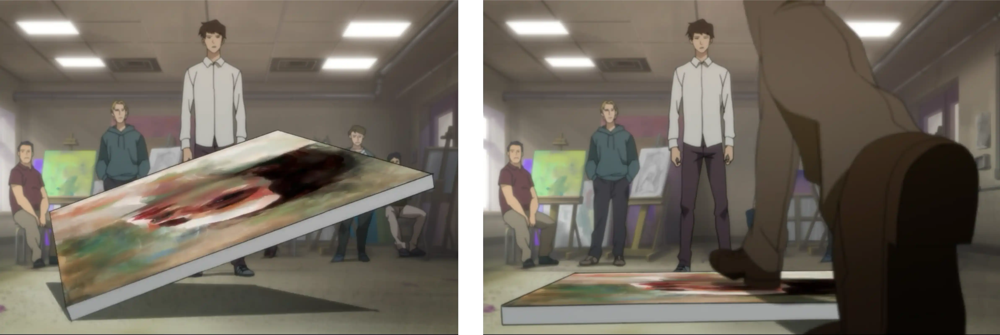Me dijo que dejara el arte, que buscara algo “útil”. Que soñaba demasiado. Y aunque intenté no escucharlo, sus palabras se quedaron conmigo como una sombra que se niega a irse.
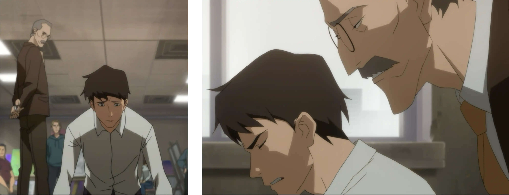Molesto y frustrado, salí del salón sin mirar atrás. Pero sabía que aquel momento seguiría persiguiéndome.
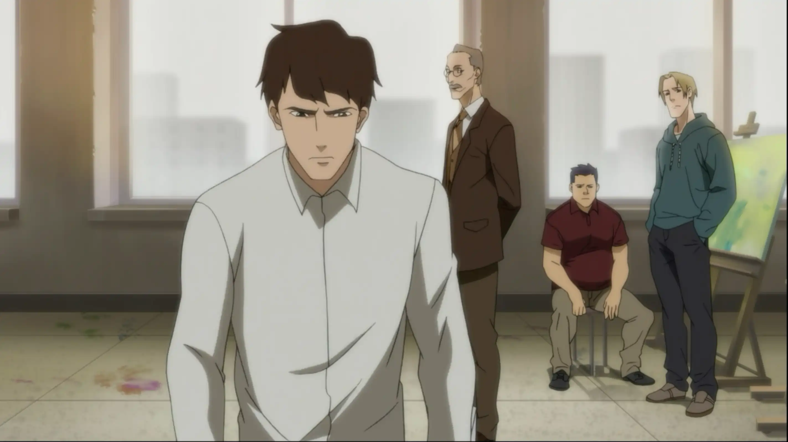Fue así como nació uno de mis primeros demonios. Él. Mi maestro. Su presencia todavía me acompaña… incluso cuando no debería.
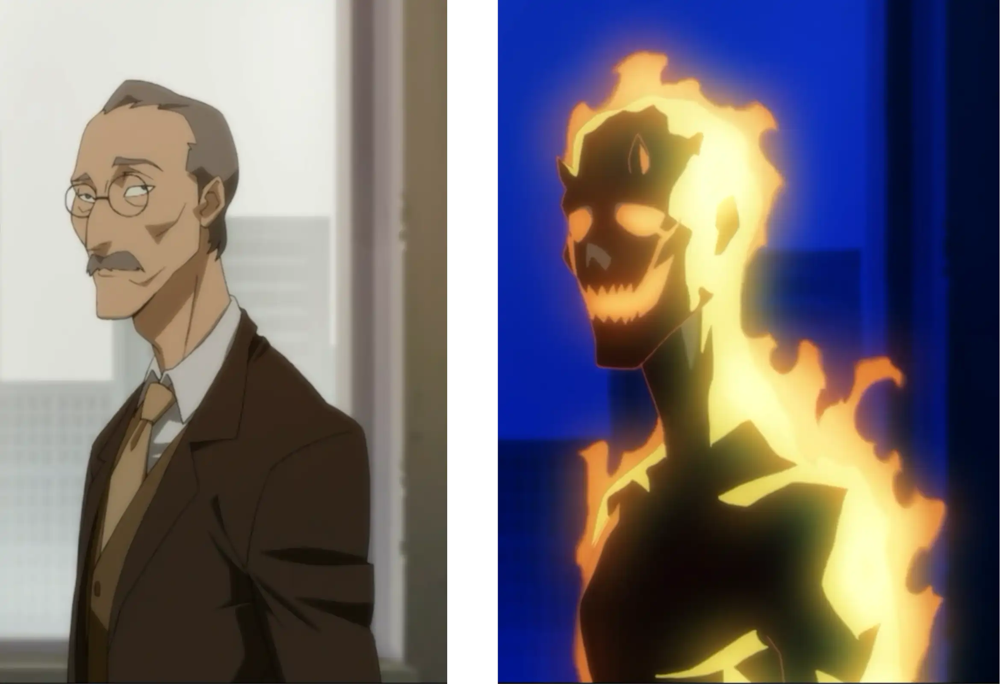Vuelvo al presente. Salgo del bar agotado, con la ropa empapada por la lluvia. Camino hacia casa sintiendo que cada paso pesa más que el anterior.
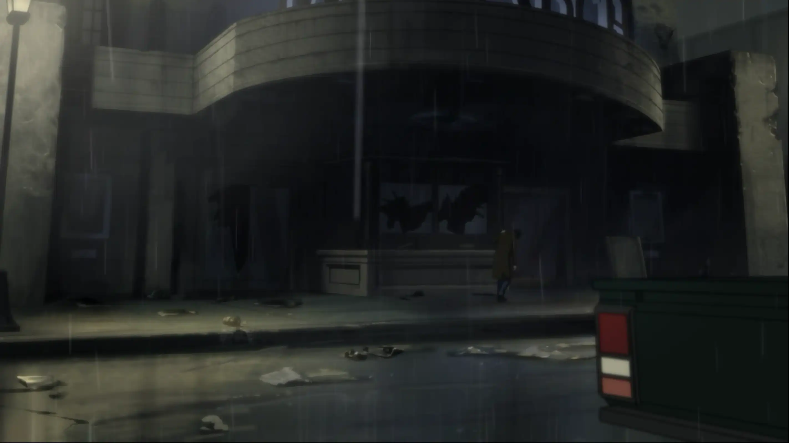Cuando llego, mi casa luce tan descuidada como siempre. Un reflejo perfecto de lo que soy últimamente.
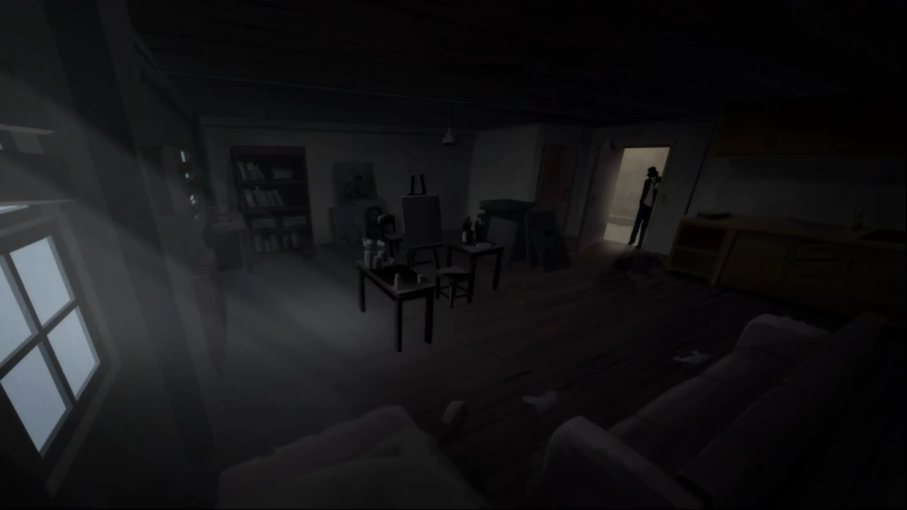Apenas cruzo la puerta, aparece otro de mis demonios: mi padre. Me reprocha haber gastado el dinero en alcohol cuando la renta está por vencerse.
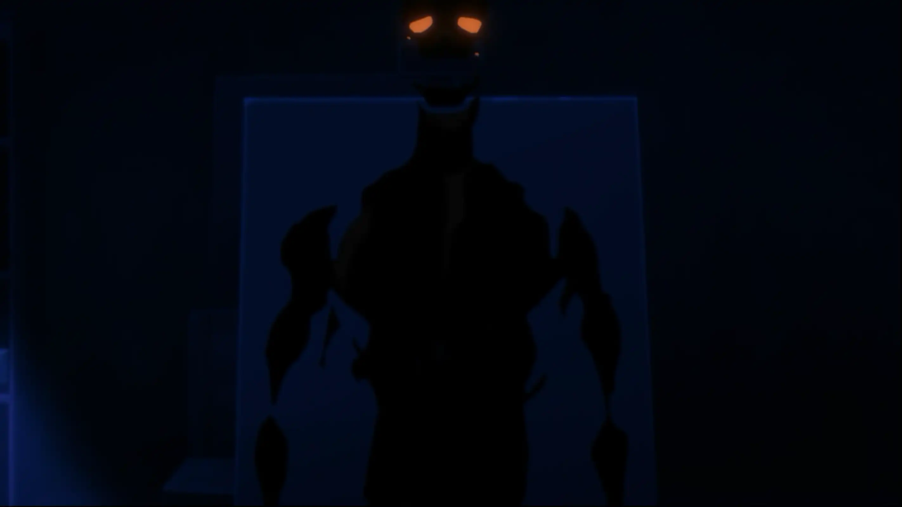Ese reclamo me arrastra a un recuerdo viejo. Yo diciéndole que detestaba mi vida, que nada tenía sentido. Él exigiéndome que volviera a la escuela, que consiguiera un trabajo. Ninguno de los dos sabía cómo hablar sin lastimar.
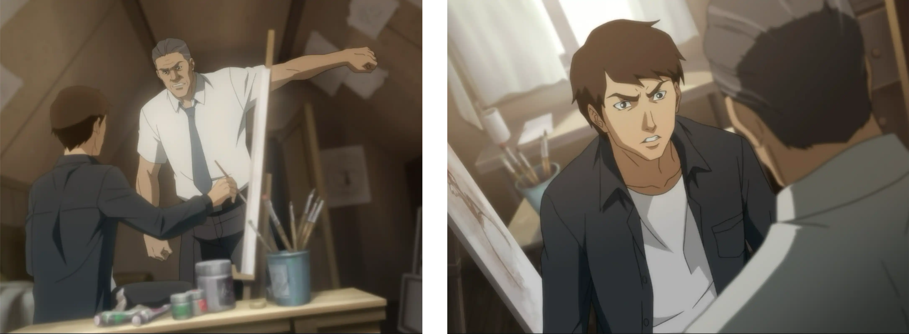En medio de todo, tomo el sombrero que ella me regaló. Y, por un momento, pienso en esa chica… en lo diferente que se sintió todo cuando estaba cerca de mí.
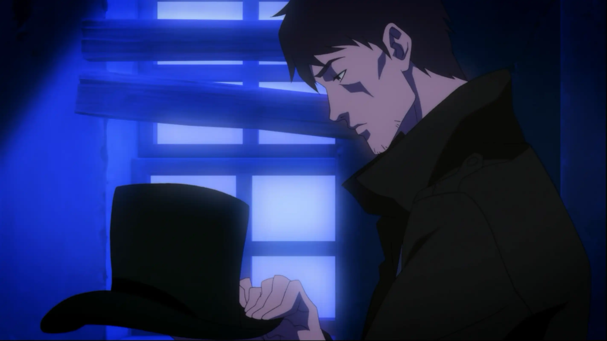Esa calma dura poco. El demonio de mi ex aparece y me abraza como siempre, recordándome cada error, cada abandono, cada parte de mí que preferiría olvidar.
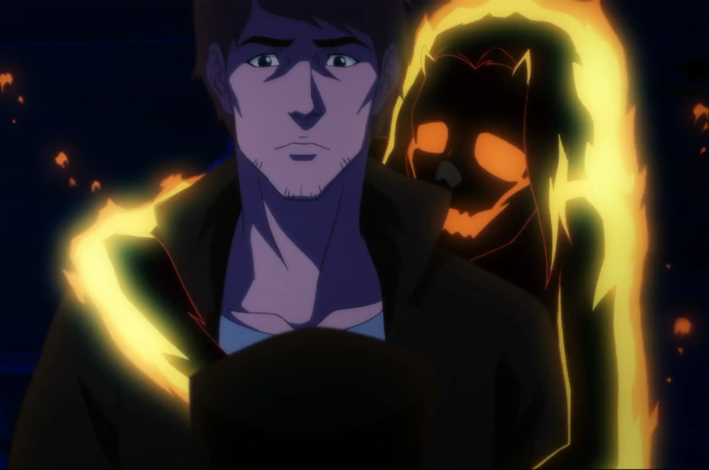Entonces llega otro recuerdo. El día en que ella decidió marcharse.
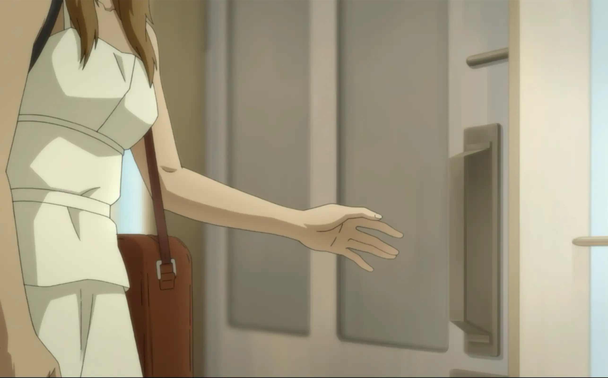Le pedí que no lo hiciera. Me dijo que ya no podía seguir viendo cómo me hundía. Que seis años eran demasiado para seguir esperando que cambiara.
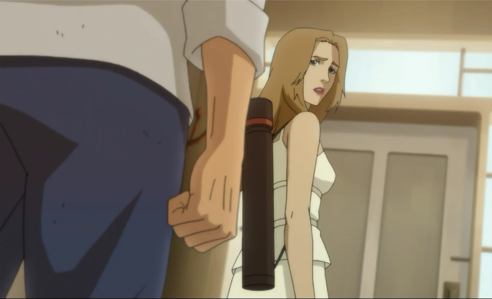Me enfadé. Le insistí en que algún día sería reconocido, como si eso pudiera arreglar algo. Ella solo me miró por última vez… y se fue.
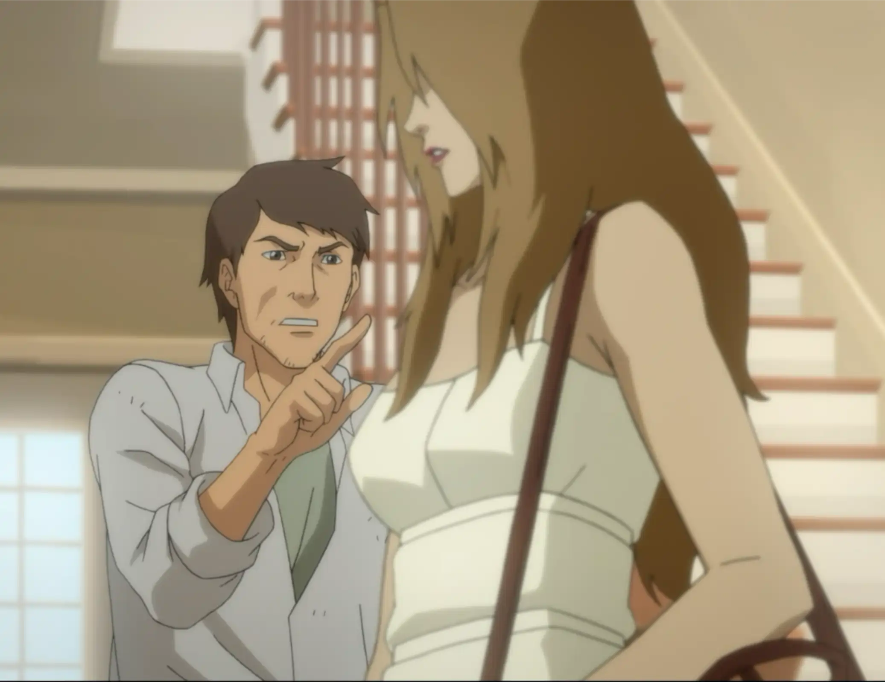La visión se desvanece, y vuelvo a mí. Estoy sentado en el sofá, fumando, inyectándome, dejando que mis demonios me rodeen. Todos. Como si estuvieran esperando que finalmente me rinda.
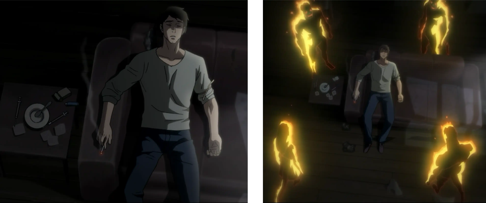